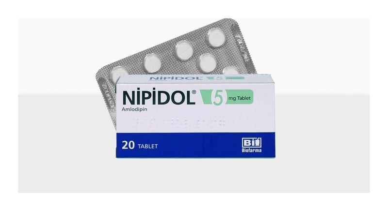

Nipidol 5 mg Tablet, 90 Adet

Ne için kullanılır
KT · Bölüm 1• NİPİDOL®ağız yolu ile alınır ve her tabl et 5 mg amlodipine eşdeğer 6,935 mg amlodipin besilat içerir. Kalsiyum ant agonistleri ol arak bilinen ila ç grubuna dahi ldir. • NİPİDOL®20, 30 ve 90 tabletlik blister amba lajda bulunur. • NİPİDOL®yüksek ka n basıncının (hi pertans iyon) ve ya anj ina adı verilen be lirli tip göğüs ağrısının tedavisinde kullanılan bir ilaçtır.
• Hipertans iyon: Yüksek kan basıncı, kanın da marlara yaptı ğı baskıdan oluşur. NİPİDOL®da marların genişlemesini, kanın damarlarda daha kolay dolaşmasını sağlayarak ka n basıncını düşürür. • Anjina, ka lp ka sının bir kısmına yeterli kan gitmediğinde oluşan ağrı ve ya raha tsızlık hissidir. Anj ina genellikle göğüs bölgesinde baskı ve ya sıkıştırıcı ağrı şeklinde hissedilir. Bazen bu ağrı kollarda , omuzlarda , boyunda çene de ve ya sırtta da hissedi lir. NİPİDOL®bu ağrıyı geçirebilir.